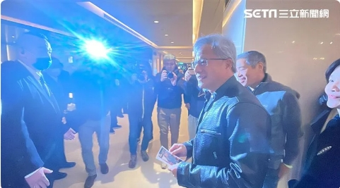
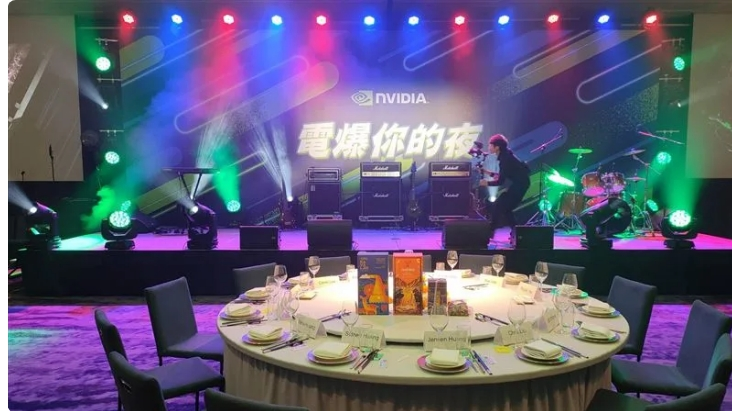

記者王翊綺／台北報導
輝達（NVIDIA）創辦人黃仁勳旋風來台，25日參加台灣分公司尾牙，並將於26日離開台灣，
他於尾牙結束後受訪透露，離台前將跟父母共進午餐，之後就要回加州。至於下次何時來
台？黃仁勳則說：「我台北國際電腦展（Computex）時一定會來，將會有重大消息宣布！」
Computex時慶祝，「我們Computex見！」
黃仁勳每次來台都廣受關注，被形容為像個「超級巨星（Super Star）」，他謙虛說「我不
是超級巨星，我們的公司是超級巨星，我只是公司的臉面。」自己是代表公司很棒的員工
們，公司能為業界做出實質的貢獻，輝達的夥伴台積電（2330）、廣達（2382）、緯創
（3231）、鴻海（2317）、日月光投控旗下矽品、華碩（2357）、聯發科（2454）、微星
（2377）、技嘉（2376）等等，台灣很多夥伴都是超級巨星。
談及新年新希望，黃仁勳指出，他將繼續盡力做到最好，「大家要加油！」輝達還有很多重
要的事情要做，當然包括AI要繼續擴張到數位醫療、數位生物學、氣候科技、自動駕駛、機
器人等等，將有很多突破。此外，AI將由工廠創造（AI Factory），海量數據將會來到工廠，
需要被處理、被定義，經由壓縮、轉換成AI，並在電腦、雲端、手機、車子等運行，這將會
影響所有產業。
目前各廠都在推行AI裝置包括PC、手機等等，但究竟何時才會真正普及？黃仁勳認為，今年
會是個開始，預期在5年之間，所有人的電腦都會有AI，它可以幫你所有事情，包括打字、創
造、拍照、創作、設計等等，AI將會接合所有我們在做的事情。目前這還是個新科技，還有
很多工作要做，而這就是輝達的任務，去發明新的突破。
更多三立新聞網報導
說好不外流！黃仁勳「跳舞影片」秒曝光 本人說話了：我只有動身體啦